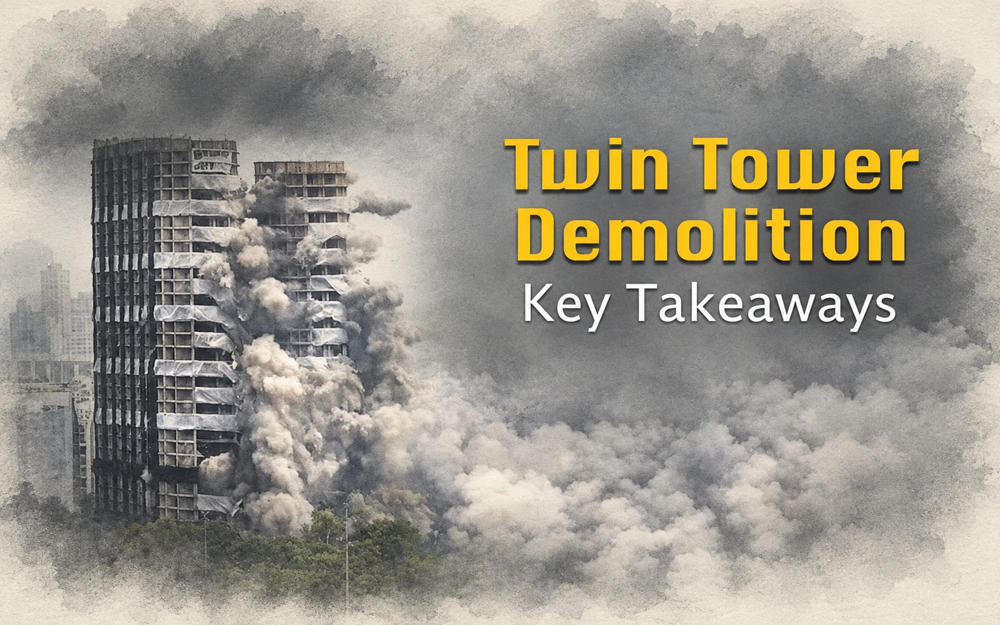

Missing Memories
Twin Tower Demolition: Key Takeaways

Within ten seconds twin towers Apex and Ceyane built by the realtor major Supertech in its Emerald Court compound in sector 93A of Noida built over a period of ten years crumbled to dust and debris at 2.30 pm on August 28, 2022, which was watched live in TV screen by crores of people across the country. The towers were thirty-two and thirty floors respectively ( 103 meters and 94 meters separately) taller than the iconic Qutub Minar in Delhi and were built at the cost of approximately 300 crores and about 18 crores were spent for the demolition drive prepared over six months following the direction of the Apex court almost one year back for violating the building registrations.
The implosion was designed by explosives expert Joe Brinkmann and 3700 kg of explosives were used for the demolition drive carried in a very meticulous manner. One day before the incident about 1400 families in the neighborhood of the buildings were evacuated for safety reasons. The company claimed to have incurred a loss of 500 crores on account of the construction, interests, and demolition cost of the twin towers, one of its most ambitious projects.
The order of demolition of the twin towers in Noida by the Apex Court is a landmark in the annals of judicial activism in India. The Supreme Court in its order on 31st August 2021 ordered the demolition of the structures on the ground that they failed to maintain the minimum distance requirement under the UP Apartment Act although the promoters maintained that the revised plan was duly approved by the concerned Development Authority.
The legal tussle started at the behest of the Emerald Court’s residents initially in the Allahabad High Court in 2012 on the ground that these two towers came up illegally in the specific area of the project demarcated to be a garden in the original plan. The Allahabad High Court favorably considered the pleas of the petitioners and ordered the demolition of the illegal structures in April 2014. The aggrieved promoters preferred an appeal against the orders of the High Court in the Supreme Court and it also upheld the decision of the High Court.
A review petition was filed by the appellant against the said order which was again turned down by the Apex Court paving way for the demolition. It was clear that the builders would ensure demolition at their own cost and without causing any damage to the other buildings in the neighborhood and the occupants. Thankfully the orders of the Court were carried out in letter and spirit.
The ramifications of the incident are far and wide. It’s a great lesson for the errant builders who flout established rules and regulations for the sake of superprofit It’s equally a lesson for the development authorities who circumvent the rules to favor the promoters at times. The Apex Court minced no words in criticizing the action of the development authority in the instant case. This also emboldened the resident’s associations in their fight against the mighty builders instead of lurching in the dark when put to harassment at the hands of the promoters.
No doubt the scene in post-RERA has changed drastically and the hapless consumers have got a better scope to agitate their grievances easily and effectively. They are getting acquainted with their legal rights and privileges under the new regime. The promoters on the other hand have become more conscious of their obligations to the home buyers. RERA has become a destination for home buyers to redress their grievances.
RERA has completed five years of its journey in the meanwhile. Time has come to make an assessment of its efficacy in delivering justice to the home buyers and making necessary changes to remove the deficiencies in the law keeping in mind the judgments of the Apex Court and different High Courts during last few years. Abandonment of the projects halfway by the promoters, inordinate delay in delivery, non adherence to the quality and facilities promised cause and creating third party interests on the property cause immense hardships to the homebuyers. These issues need to be addressed properly within the legal framework. Mushrooming of unregistered projects also pose threat to the buyers. Therefore, the enforcement mechanism needs to be strengthened to curb the wilful violations by the promoters and the execution process requires to be effective for benefit of the homebuyers. Let’s hope, rule of law prevails and we don’t have to face unwarranted situations like the infamous twin towers episodes.
Leave a thought
Likes and comments will open soon.